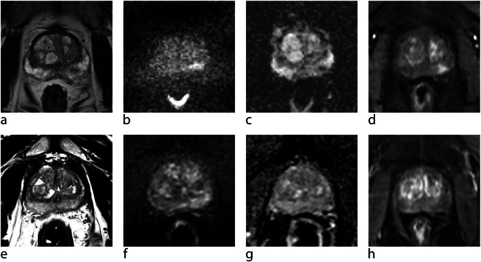

Ficha del catálogo
Cáncer de próstata en resonancia multiparamétrica
- Sistema
- Urinario
- Modalidad
- RM
- Región
- Próstata
- Dificultad
- Avanzado
La resonancia multiparamétrica se ha consolidado como la herramienta que permite detectar y localizar el cáncer de próstata clínicamente significativo antes de la biopsia. Combina información morfológica y funcional para asignar a cada lesión una probabilidad de malignidad. Su uso ha reducido las biopsias innecesarias y ha mejorado la orientación del muestreo dirigido.
Técnica
El estudio se realiza preferentemente en equipos de alto campo con secuencias potenciadas en T2 de alta resolución en tres planos, difusión con valores altos de b y mapa de coeficiente de difusión aparente, y estudio dinámico tras contraste. La difusión es la secuencia dominante para la zona periférica y las imágenes potenciadas en T2 lo son para la zona de transición. La preparación intestinal y la espera tras una biopsia reciente mejoran la calidad.
Qué observar
- Zona periférica con focos de baja señal en secuencias potenciadas en T2
- Restricción marcada de la difusión con caída de señal en el mapa de coeficiente aparente
- Lesiones de la zona de transición con bordes mal definidos y aspecto homogéneo
- Tamaño mayor de la lesión y su relación con la cápsula
- Abombamiento capsular, contacto extenso con la cápsula y extensión extraprostática
- Afectación de vesículas seminales y adenopatías pélvicas
Hallazgos
En la zona periférica la lesión sospechosa aparece como un área de baja señal en las imágenes potenciadas en T2 que restringe la difusión de forma marcada y muestra realce precoz y focal. En la zona de transición la sospecha se basa en una lesión homogénea de señal intermedia con márgenes borrosos y forma lenticular, que contrasta con los nódulos hiperplásicos bien encapsulados. La extensión extraprostática se sugiere por contacto capsular amplio, irregularidad del contorno o invasión del paquete neurovascular.
Perlas
Los cambios posteriores a una biopsia producen hemorragia que altera la señal y puede simular o enmascarar lesiones, por lo que conviene esperar un intervalo suficiente antes del estudio. Además la hemorragia respeta con frecuencia el tejido tumoral, de modo que un área de baja señal rodeada de hemorragia debe valorarse con cuidado.
Diagnóstico diferencial
- Prostatitis crónica
- Produce áreas de baja señal en cuña o en banda, difusas y bilaterales, con restricción menos intensa.
- Nódulo de hiperplasia benigna
- Está bien encapsulado, es heterogéneo y se sitúa en la zona de transición con márgenes nítidos.
- Hemorragia posbiopsia
- Muestra señal alta en secuencias potenciadas en T1 y se resuelve en controles posteriores.
- Atrofia glandular y fibrosis
- Se acompaña de pérdida de volumen y retracción del contorno, sin masa ni restricción marcada.
Simuladores
- Pseudolesión de la banda fibromuscular anterior
- Nódulos hiperplásicos extruidos hacia la zona periférica
- Artefacto por prótesis de cadera que degrada la difusión
Por modalidad
- RM
- Es la técnica central porque combina morfología, difusión y perfusión, localiza la lesión y guía la biopsia dirigida.
- TC
- No detecta el tumor dentro de la glándula y solo se emplea para valorar adenopatías y enfermedad a distancia.
Protocolo
Resonancia de próstata con antena de superficie, secuencias potenciadas en T2 de alta resolución en axial, sagital y coronal, difusión con al menos dos valores de b y mapa de coeficiente de difusión aparente, e imágenes dinámicas tras contraste con buena resolución temporal. Se recomienda evitar la eyaculación en los días previos, vaciar el recto y usar un antiespasmódico para reducir el movimiento. El informe debe localizar la lesión en un esquema por sectores para permitir la biopsia dirigida.
Clasificación
El sistema PI-RADS asigna a cada lesión una categoría del 1 al 5 según la probabilidad de cáncer clínicamente significativo, empleando la difusión como secuencia dominante en la zona periférica y las imágenes potenciadas en T2 en la zona de transición. El estudio dinámico tiene un papel de apoyo para reclasificar lesiones intermedias de la zona periférica. Las categorías altas justifican biopsia dirigida.
Errores frecuentes
- Realizar el estudio poco después de una biopsia y confundir hemorragia con tumor
- Aplicar el criterio de difusión a la zona de transición y sobrediagnosticar nódulos hiperplásicos
- No describir la localización precisa de la lesión, lo que impide una biopsia dirigida útil

próstata resonancia multiparamétrica PI-RADS difusión biopsia dirigida zona periférica estadificación